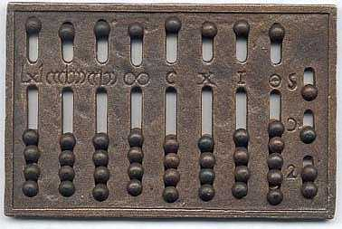
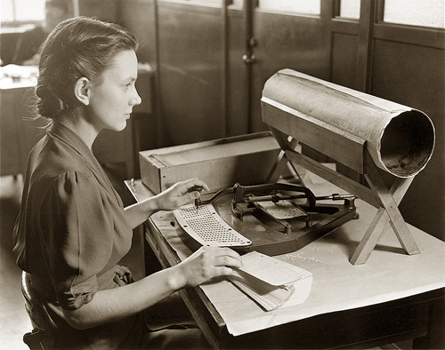
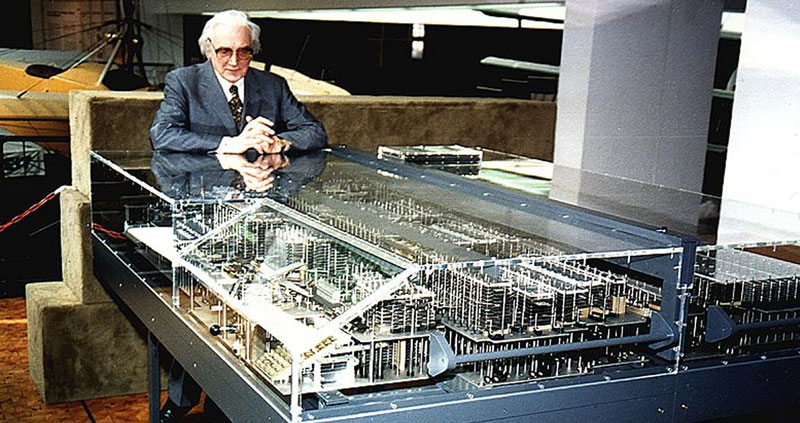

- Итак, друг мой, сейчас ты познакомишься с одним из самых грандиозных изобретений человечества - компьютером - ближе. Ты узнаешь каким были компьютеры раньше, и какие они сейчас. Вперёд к знаниям!
Обыкновенные счеты

Можно сказать, что история компьютеров берет начало со дня появления
обыкновенных счетов, которые на долгие века оставались почти единственным
видом вычислительной техники. Кое-какие новые идеи начали появляться в XVI
веке. Именно тогда испанский монах Раймунд Луллит выдвинул идею логической
машины, однако конкретная реализация вычислительных устройств началась лишь
в середине прошлого века.
Первая простая машина для сложения и вычитания шестиразрядных чисел был
создана астрономом Уильямом Шикардом в 1623 году. При помощи
специальных счетов можно было производить операции умножения,
а если результат превышал возможности машины, то звонил специальный
колокольчик. В 40-х годах того же века Блез Паскаль создал свой
вычислитель, который производил операции сложения семизначных
чисел, а позже Готфрид Вильгельм фон Лейбниц сконструировал
механическую счетную машину, которая позволяла не только
складывать и вычитать, но и перемножать двенадцатиразрядные
числа.
Программы на перфокартах

Следующим этапом стал XIX век, когда продолжилось развитие и усовершенствование
счетных машин, в которых стали использоваться программы на перфокартах (Чарльз Бэббидж, 1834 г.).
В изобретенной им машине, которая так и не была реализована, должны были производиться
дифференциальные расчеты до 20-го знака, однако по замыслу машина приводилась в
движение паром и занимала целую комнату. В ней имелся прообраз центрального процессора,
ввод программ при помощи перфокарт, блок памяти и вывод на печатный пресс.
В работе изобретателю помогала графиня Ада Августа Кинг, внебрачная дочь поэта Байрона,
которая считается первой программисткой, и в конце XX века в ее честь был назван язык
программирования Ада. Затем появился клавишный ввод (Дорр Фелт), а закончился век
появлением машины Германа Холлрита, которая помогла произвести перепись населения США.
Данные о человеке набивались на отдельной перфокарте, информацию с которой считывала
машина. Проект был успешным, и спустя несколько лет Герман Холлрит основал «Tabulating
Machine Company» по производству оборудования для работ с перфокартами. В дальнейшем
эта компания переросла в компанию IBM.
В XX веке возникла необходимость производить большое количество вычислений, соответственно, стали
появляться различные вычислительные машины. В 1938 году англичанин Ален Тьюринг обосновал
принципиальную возможность создания вычислительных машин и предложил абстрактную схему
(«машина Тьюринга»). Его статья, называвшаяся «Может ли машина мыслить», получила большой
резонанс в ученой среде. Во время второй мировой войны Ален Тьюринг вошел в группу
разработчиков вычислительной машины Colossus, при помощи которой удалось расшифровать
коды немецких спецслужб.
Z1...

В 1938 году Конрад Цузе создал в Германии один из первых компьютеров, названный Z1. Машина имела
блок памяти, ввод программ с перфокарт, действовала на основе двоичного кода. За ней
последовали Z2, Z3 в 1941 году, а затем Z4. В эти же годы были появились и другие
машины, например, АВС (Atanasoff Berry Computer), созданный профессором Джонсоном В.
Атанасовым, Complex Number Calculator, создание Джорджа Стиблица, далее Univac, Binac,
Edvac и т.д. Какие из этих машин можно считать компьютером, а какие просто вычислительной
машиной, мы оставим судить специалистам, которые вели, ведут и, наверное, еще долго будут
вести споры по этому вопросу.